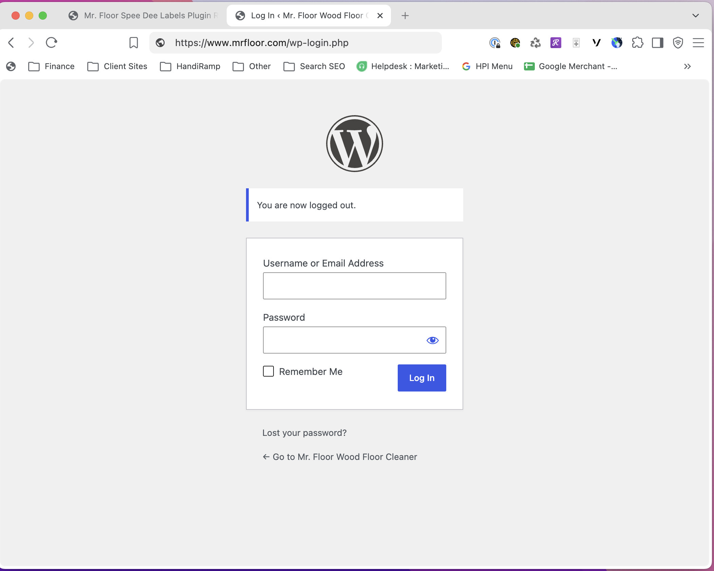
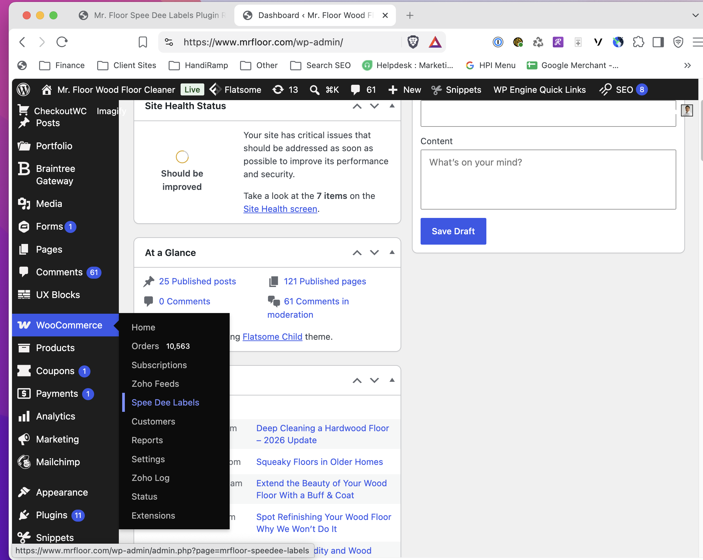

Mr. Floor Spee Dee Labels Plugin Runbook
Start at the Mr. Floor WordPress sign-in, open WooCommerce > Spee Dee Labels, then review and quote eligible orders, create one authorized live shipment, build a selected-label 2-up PDF, save it for Debbie, and correct mistakes without creating another shipment.
Start-to-Finish Version
1. Sign InLog in to Mr. Floor WordPress with your own assigned account.
2. NavigateOpen WooCommerce, then select Spee Dee Labels.
3. Quote OrderUse Ready. A quote returns here and does not create a shipment.
4. Create OneSelect exactly one approved quoted order in the Print Queue.
5. Select LabelsOnly label-ready rows can be batched; quoted rows cannot print.
6. Download BatchThe dated batch PDF opens in a new tab; save it for Debbie.
7. Cancel MistakesCancel the shipment before removing any created queue row.
Creation alert: every selected eligible quoted order creates a Dispatch Science/Spee Dee shipment. If you are not authorized to make that shipment, stop before selecting a row.
1. Sign In To Mr. Floor WordPress
- Open the Mr. Floor WordPress login page. Go to
https://www.mrfloor.com/wp-login.php. - Enter your assigned WordPress username or email address and password. Use your own account; do not share credentials or use someone else’s saved browser login.
- Click Log In. You should arrive at the Mr. Floor WordPress Dashboard. If you do not have access, stop and ask the Mr. Floor/2.0heads administrator for an account rather than attempting work in WordPress.
WordPress login:
https://www.mrfloor.com/wp-login.php

2. Navigate To Spee Dee Labels
- Find WooCommerce in the black menu on the left. Move your pointer over
WooCommerceto open its submenu. - Select Spee Dee Labels. It is inside the WooCommerce submenu, below
Zoho Feeds. Do not chooseOrders; that opens the regular WooCommerce order list, not the shipping-label tool. - Wait for the Spee Dee Labels page. It opens on the
Readytab. From here, continue with quoting, creating, batching, or canceling as needed.
The direct plugin page is
https://www.mrfloor.com/wp-admin/admin.php?page=mrfloor-speedee-labels, but the menu path above is the normal starting path after logging in.

3. Confirm You Are In The Right Tool
- Confirm the page title says Spee Dee Labels. The working tabs are
Ready,Print Queue,Needs Attention,Batches, andSettings. - Start on Ready. This is where unqueued orders are reviewed and quoted. Already-quoted orders show
View Queue, notCheck Spee Dee. - Ignore the license mismatch banner if it appears. That banner belongs to another plugin and does not affect Spee Dee labels.
Spee Dee Labels
License Mismatch
Your license key does not match your current domain.
Your license key does not match your current domain.
ReadyPrint QueueNeeds AttentionBatchesSettings
Ready To Review
| Order | Ship To | Packages | Status | Action |
|---|---|---|---|---|
| #40872 | Chicago, IL 60659 | 1 pc / 10.00 lb | quoted | |
| #40863 | Sparta, TN 38583 | 1 pc / 10.00 lb | Needs attention |
4. Quote Or Find An Order
- Use Ready for new orders. Click
Check Spee Deewhen the button appears. - A successful quote returns to Ready. The confirmation says the order is in Print Queue, so you can keep reviewing Ready orders without using Back.
- If you see View Queue, the order is already quoted. Open the
Print Queuewhen you are ready to review it. - Read the Packages column; do not hand-edit it. The plugin converts cleaner orders into Debbie's approved cartons. Replacement mop-pad-only orders are intentionally blocked for USPS bubble-pack handling, not forced into Spee Dee.
- Out-of-service states are blocked. GA/TN and similar rows should go to
Needs Attentioninstead of calling Spee Dee.
A quote does not create a shipment, label, customer email, or carrier charge. It only checks price/service and stores the order in the local plugin queue.
Spee Dee Labels
ReadyPrint QueueNeeds AttentionBatchesSettings
Ready To Review
| Order | Ship To | Packages | Status | Action |
|---|---|---|---|---|
| #40872 | Chicago, IL 60659 | 1 pc / 10.00 lb | quoted | |
| #40865 | Northbrook, IL 60062 | 1 pc / 10.00 lb | quoted | |
| #40864 | Chicago, IL 60614 | 3 pc / 23.00 lb | quoted | |
| #40863 | Sparta, TN 38583 | 1 pc / 10.00 lb | Needs attention |
5. Create One Shipment
- Confirm you have authorization. Do not create a shipment unless you are authorized to do so.
- Open Print Queue and select exactly one eligible quoted order. The same checkboxes are used for creation and batching, so confirm the one selected row before continuing.
- Click Create Spee Dee shipments for selected. Wait for the page to return to the queue; do not click again.
- Confirm Label ready. The row should show a shipment/tracking value and a
Download labellink, which opens the stored PDF in a new tab. - Check the Woo order tracking card. The plugin writes
Spee-Dee Delivery, the tracking value (anSD...shipment ID is used if no barcode is returned), and the customer tracking-portal link. - If the shipment exists but the PDF is missing, use Fetch label. It retries label retrieval only; it does not create a second shipment.
Creation is a real external API call to Dispatch Science and is the charge-risk action. Use one selected order until the workflow is fully approved.
Spee Dee Labels
ReadyPrint QueueNeeds AttentionBatchesSettings
Print Queue
| ✓ | Order | Queue Status | Quote | Shipment | Action |
|---|---|---|---|---|---|
| #40872 | Quoted — no label yet Creation is required |
$9.61 | |||
| #40865 | quoted | $9.61 |
6. Generate And Save The 2-Up PDF
- Stay on Print Queue and select only Label ready rows. Quoted rows do not have labels. The plugin fails closed if any selected row is not label-ready.
- Choose
2-up letterand a Start slot. UseTopfor a new sheet orBottomif the top half has already been used. - Click Generate 2-up batch PDF. Open the
Batchestab and download the latest batch. The link opens in a new tab and changes toOpening…. - Use the generated filename. It is automatically named
speedee-batch-YYYY-MM-DD-01.pdf; the last two digits advance for each local WordPress day. - Save the downloaded PDF to Dropbox. Use
/Dropbox/Mr. Floor/Spee Dee Delivery. - Debbie prints in Skokie. Print actual size on 8.5x11 half-sheet label stock, scale 100 percent, duplex off.
Downloading, saving, and printing the PDF does not create another Spee Dee charge. The charge-risk step is creating the shipment.
If you see
No labels are ready to batch, the queue contains quotes only or created shipments whose PDFs were not stored. Create an approved shipment first, or use Fetch label for an existing shipment with no PDF.
Spee Dee Labels
ReadyPrint QueueNeeds AttentionBatchesSettings
Print Batches
| Batch / Filename | Layout | Labels | Created | Download | |
|---|---|---|---|---|---|
#2speedee-batch-YYYY-MM-DD-01.pdf |
2up-letter | 1 | 2026-09-13 09:00 | Not opened yet |
Save to: Dropbox / Mr. Floor / Spee Dee Delivery / speedee-batch-YYYY-MM-DD-01.pdf
Dropbox Handoff
Folder
/Dropbox/Mr. Floor/Spee Dee DeliveryFilename
speedee-batch-YYYY-MM-DD-01.pdf (the sequence advances automatically)Printer owner Debbie prints the saved PDF at Mr. Floor in Skokie.
Keep Dropbox manual; it avoids Dropbox API credentials in WordPress and makes every created shipment visible before anyone prints it. Last opened in Batches confirms a protected PDF download request only—not a physical print.
Print Sheet Orientation
The plugin imports the Spee Dee 4x6 Label PDF and rotates it at true size into a half-letter slot. Debbie should print the Dropbox PDF at 100 percent scale, with duplex off.
Top start slot
Use for a fresh 8.5x11 label sheet
Use for a fresh 8.5x11 label sheet
Bottom start slot
Use when the top half is already used
Use when the top half is already used
7. Cancel Or Clear A Mistake
- Cancel shipment voids the external Dispatch Science order and removes the matching
Spee-Dee Deliverytracking record from WooCommerce. - Remove only removes the local plugin queue row. Use this for quoted rows or stale queue cleanup.
- Confirm the cancellation banner. Do not Remove a created row until the cancellation succeeds. If cancellation fails, leave the row in place and escalate it.
Do not use Remove as a substitute for Cancel after a shipment has been created.
Spee Dee Labels
ReadyPrint QueueNeeds AttentionBatchesSettings
Print Queue
| Order | Queue Status | Shipment | Action |
|---|---|---|---|
| #40872 | label_ready | SD1234567 Download label |
Operator Checks
Quoted state Quoted rows have price only. They do not have shipment ID, tracking, or label file, and cannot be batched.
Label-ready state Created rows should show shipment/tracking and a Download label link before batching. Use Fetch label if the shipment exists but the PDF is missing.
If a row's state does not match this guide, treat the live WordPress UI as the immediate source of truth and stop before a create, batch, or cancel action. The plugin owner can inspect the queue and settings directly.